Almost everything in Vizsla is built for one person’s own machines, running locally, under that person’s own hand. This shelf is the stated exception: software an organization runs on a server, because institutions are large and scattered and some jobs honestly need one shared source of truth. Two members live here, and both are labelled exactly as they stand — one in development, one a planned adoption of somebody else’s open-source work. Nothing on this page is a finished download, and nothing here is for sale today.
IDenty Pro
IDenty Pro is a free and open-source database built on a single idea: one canonical record for one person, kept for life. The record follows a human from kindergarten through school and college — through medical or dental school and graduate medical training, through trade school, into employment, and on through retirement — instead of being re-created, badly, at every door.
That is the problem it exists to kill: every institution a person meets currently re-keys the same facts into its own system, and every re-keying is a chance for the copies to disagree. With IDenty Pro, institutions share the person’s one verified profile. A fact is entered once, and the schools, programs, and employers who are entitled to it read it from the record itself.
The record is role-adaptive. A parent, a teacher, a student, an employer, and an institution each see only the modules meant for them — the same record, a different face, and nobody sees a module that isn’t theirs to see.
IDenty Pro is the enterprise exception in the Vizsla family: the one product designed from the start to run on a central server for an organization, because a record shared by institutions cannot live on one person’s laptop. Its honest state: in development. There is no download and no finished product — but it is far enough along to show, not just describe. Every screenshot on this page is a real capture of the current build, running on fictional demo people.
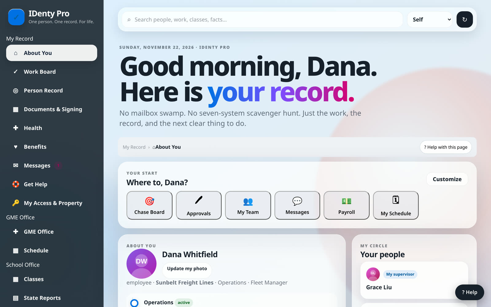
Why the big HR platforms are broken
IDenty Pro exists because the systems it would replace — Workday and UKG are the names at the top of the market — fail in ways that are structural, not accidental. If you have ever administered one, you already know this list. Here it is in plain words.
The price is a second payroll
The big platforms are priced per employee, per month, per module: HR in one line item, timekeeping in another, recruiting in a third, learning in a fourth. Before any of that, the implementation — a project with a partner firm and a timeline measured in quarters, billed like construction. After it, the annual increase, because the contract says so. A mid-size company can end up paying more for the software that tracks its people than it pays some of the people.
“One platform” is several products in a trench coat
UKG is what happened when Kronos and Ultimate Software merged — two companies’ systems, still being stitched together years later. Workday grew the same way, by acquisition. Payroll lives in one product, time in another, recruiting in a third, and your people’s data is copied between them on a schedule. The copies disagree. Everyone who has run one of these systems has a story about which copy was wrong.
“Integrated” means somebody bills you for the plumbing
Every connection — to an insurance carrier, a bank, a badge system, a background-check firm — is an integration: scoped, built, tested, and maintained, usually by a consultant. Change a field on one side and the interface breaks on the other. The vendors call this an ecosystem. It is a toll road.
Simple things need custom development
A new approval chain. A report your auditor actually asked for. A hiring form that matches how your company really hires. In theory: configuration. In practice: a statement of work. The honest answer to “can it do that?” is “our partners can build it” — at day rates, on their calendar, in a way the next upgrade may or may not respect.
The same person is typed in five times
Applicant tracking, HR, payroll, time, learning, badges — each system wants the human re-keyed, and each copy rots at its own speed. A name spelled three ways. A termination that reaches payroll but never reaches the door badges. That is not a data-entry problem; it is what happens when a person’s record has five homes instead of one.
The people doing the work get the worst screens
The executive gets a dashboard. The driver, the nurse, the teacher’s aide — the people who clock in, swap shifts, and wonder why a check changed — get the clunkiest corner of the product and a phone queue. Their requests go in and are never seen again: no status, no name attached, just pending.
You rent your own people’s history
The record of who worked, what they earned, and what they were certified to do sits in the vendor’s cloud, metered by the seat. Getting it out — really out, all of it, in a shape you can use — is its own project, quoted separately. Leaving is priced to make you stay.
And the company intranet is a swamp
The same disease lives one floor down, in SharePoint — the intranet most companies are issued whether they asked or not. Anyone can create a site; nobody ever deletes one, so the handbook could be in any of fifty sites, in three versions, two of them wrong. Permissions come in dozens of flavors, managed from three different control panels, with inheritance that breaks and stays broken — so the new hire can’t open what the team can, while a contractor keeps access nobody remembers granting. Search takes the blame, but the engine is fine: the content is rotten — no owner, no review date, no expiry — so people stop trusting it and go back to emailing documents around. News never expires on its own. And you can’t buy just the intranet: it arrives inside the whole Microsoft 365 bundle, per person, per month, forever, with a consulting project on top to stand it up. IDenty Pro’s answer is below: the intranet is not a second product. It is the same building.
What IDenty Pro does instead
One record, typed once
A person is entered once and verified once, and every institution that person meets reads the same record. In the demo data below, one driver’s single timeline carries two employers, his CDL, his DOT medical card, and his pay — school, training, and work in one place, because in a life they were never separate.
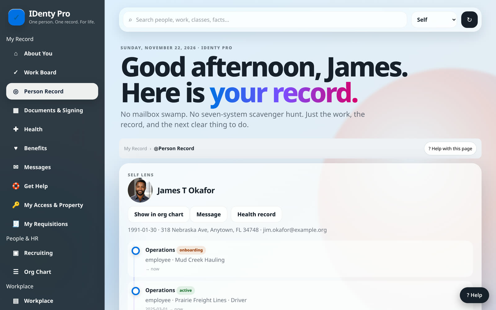
Everything is the same system, so nothing needs integrating
Payroll, time, scheduling, leave, recruiting, compliance, support tickets, forms, badges, and the truck keys all read and write the one record. There is no interface to break because there is no second system. The payroll below is not a module bought from somebody else: the gross-to-net engine — federal brackets, FICA, W-4, garnishments — is part of the record, and it says so on its own page.
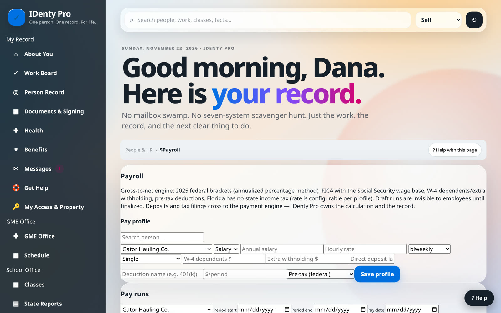
And the office lives here too
The subscription pile doesn’t stop at the HR platform. A company today also rents the office suite for documents and spreadsheets, the chat app, the video app, the task board, the helpdesk — five more subscriptions, five more logins, and not one of them knows the employee record exists. IDenty Pro’s answer is the same as everywhere else in this design: built in, on the same record. Instant messaging and video calls are part of the system — calls run peer-to-peer, and a group call waits in a join bar instead of ringing six people at once. The Work Board carries the team’s tasks, grown out of the record’s own gaps. Documents are written on the record, signed natively, and sealed as evidence. And a full office suite — word processing, spreadsheets, forms bound to record facts, print-faithful PDFs — is being built into the same core: its engine already exists and passes its tests, and the editing faces are the piece still under construction. This page won’t pretend otherwise — but the direction is fixed. It is all one system, or it is a pile.
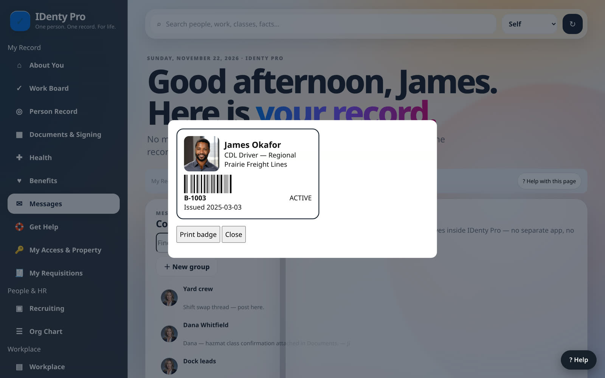
Requests cannot vanish
Every request carries a status and the name of the human deciding it. Nothing sits in an anonymous “pending.” A manager’s request to hire is a structured form — title from a catalog, headcount, start date, work location, orientation location, supervisor, pay band — and it walks four approvals in order: supervisor, leadership, HR, finance. Each signer certifies in words the system keeps verbatim, and nobody can approve their own request. When the last signature lands, the approved request posts the job itself. No re-typing it into a second system, because there isn’t one.
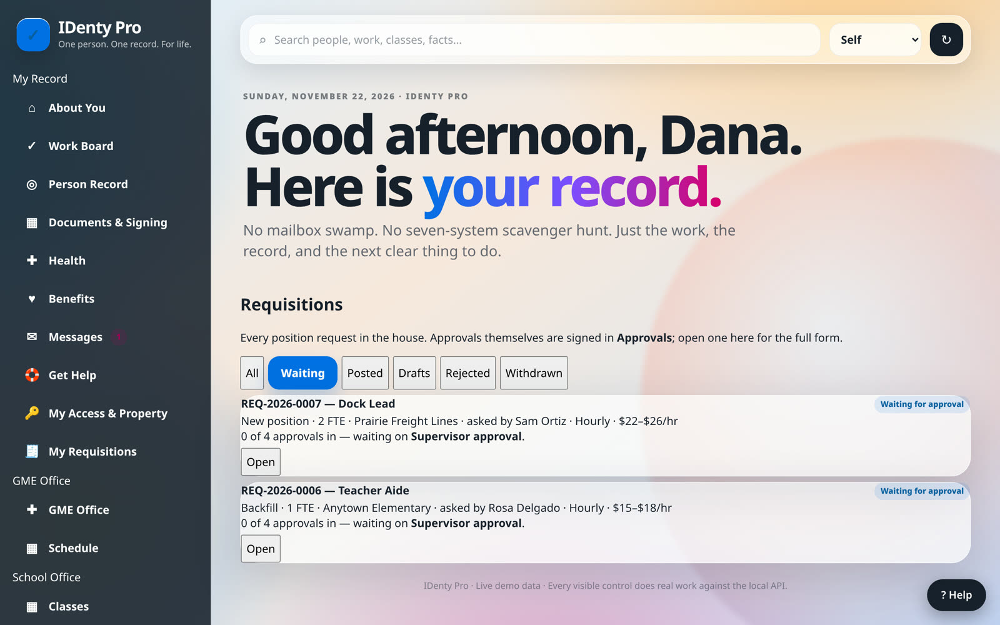
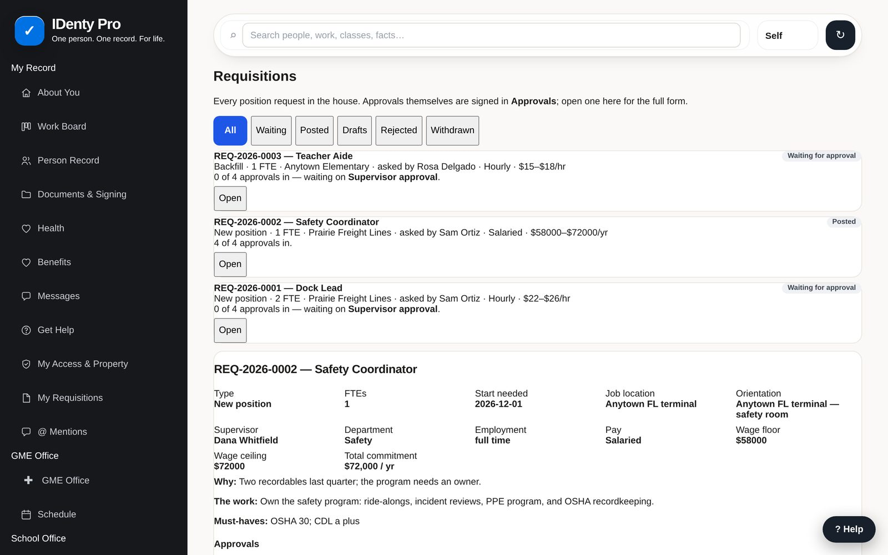
The system does the chasing
Expiring licenses, missing forms, aging tickets, PPE past its replace-by date: one board, computed from the live record and stamped with the time it was computed. In the big platforms this work lives in somebody’s inbox and memory, and it is the first thing that slips when that person goes on vacation.
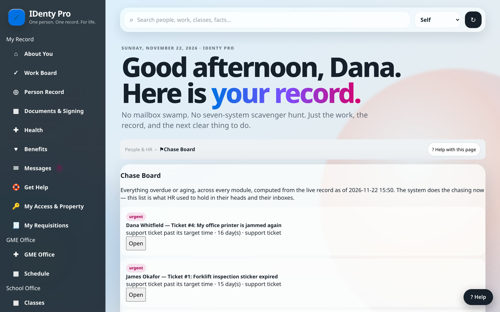
Access and property come from the same record
Hired, and the accounts, the badge, the laptop, the uniform, and the truck appear — driven by the job on the record, not by a ticket to IT. The badge is generated by the system itself. A vehicle cannot be handed to a driver whose CDL or medical card has lapsed; the record refuses. Gone, and sign-ins stop the same day, shared work gets a handover window, and an exit certificate states exactly what came back. In the big-platform world this is three more products and a spreadsheet. Here it is the same record, doing what a record is for.
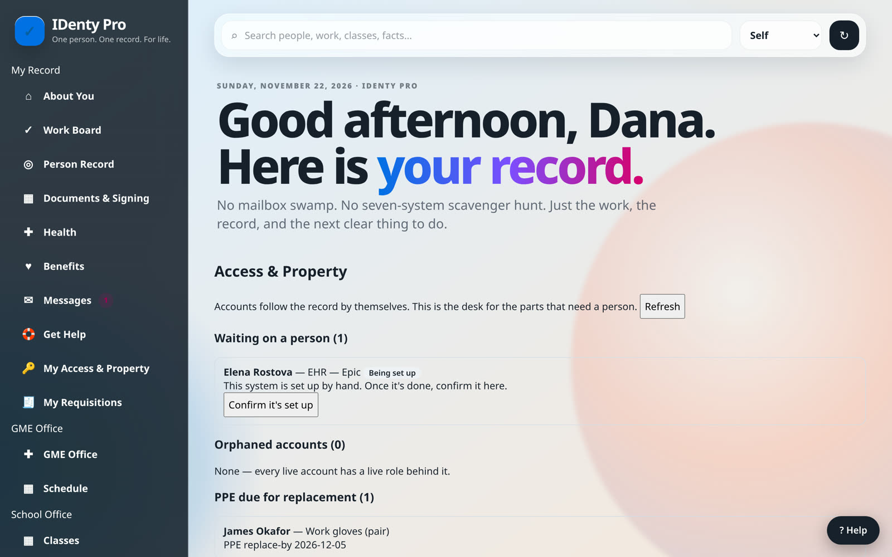
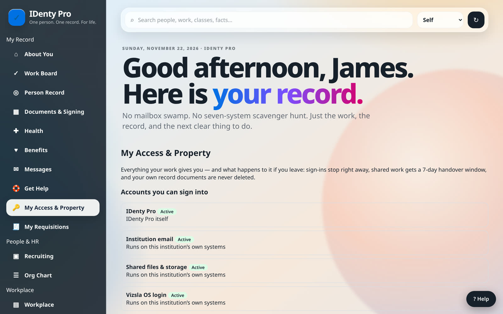
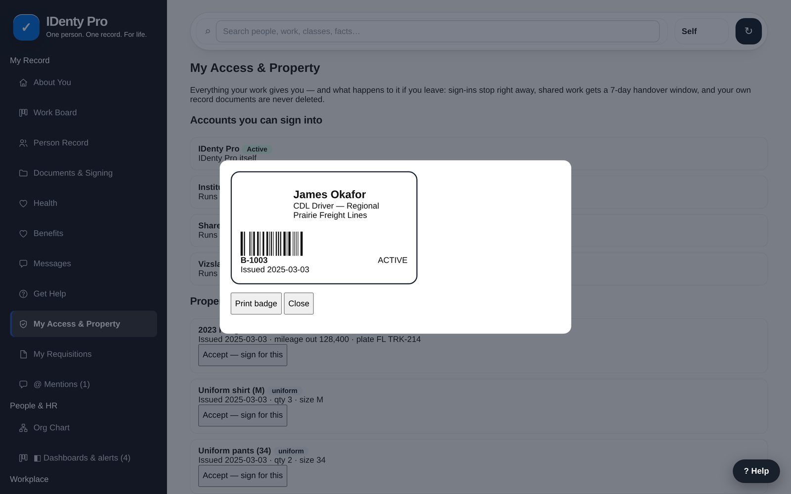
Built for the institutions the giants underserve
A residency program gets its graduate-medical-education machinery — milestones, procedure counts, duty hours, accreditation windows — in the same record the hospital hires from. A school district gets classes and state reports. Nobody buys a second platform for the training years, and nobody re-keys a resident into a separate trainee system for three years and back out again.
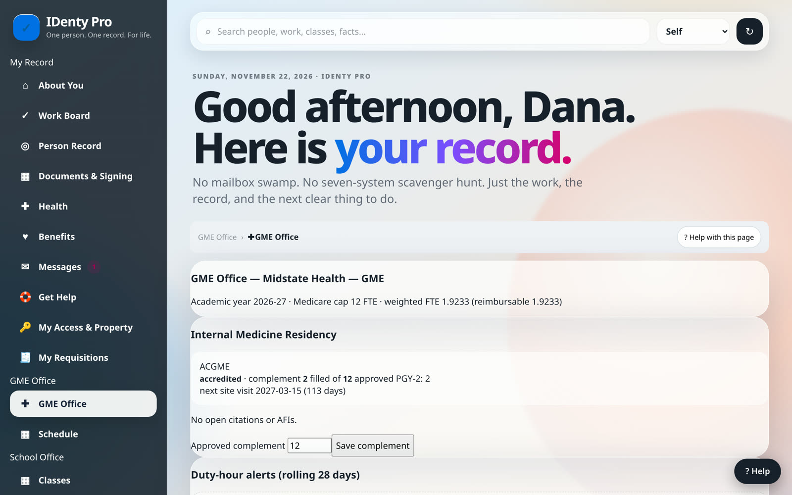
Help lives in the building
The support desk and the how-to library are part of the same system, reading the same record. A worker’s ticket about a forklift and the article that answers the next worker’s question live one search apart, and the people who fix things can see the record of the person asking. No separate helpdesk contract, no knowledge base in a fourth cloud.
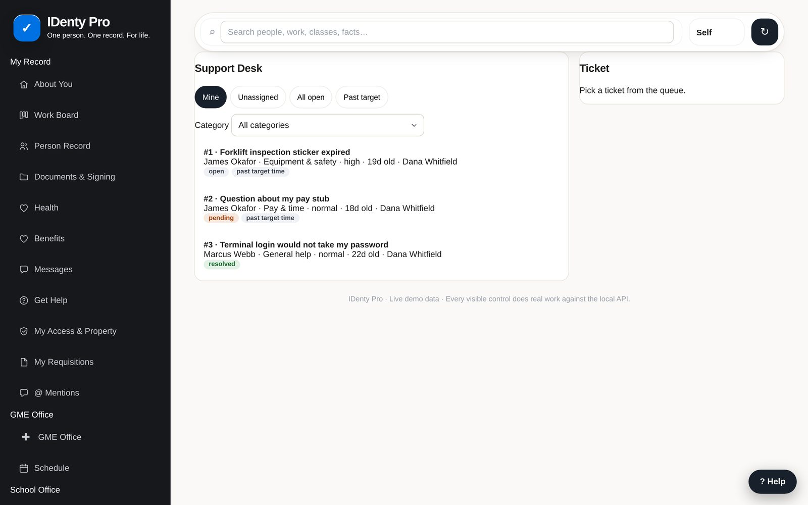
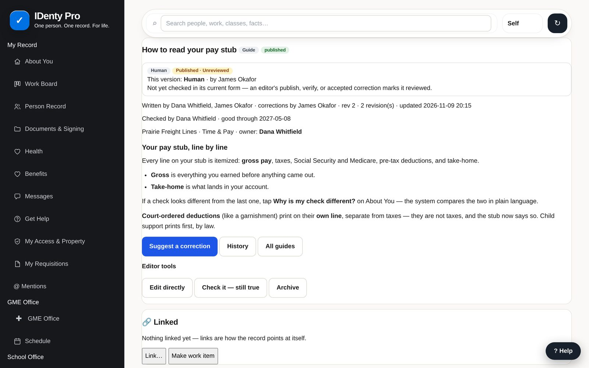
The dealership runs on the same record
A car store usually keeps three more systems that have never met the employee file: one to desk deals, one for the service lane, one for parts. Here they are one more face of the record. A customer is a person on the record — the driver who works for the freight company buys his car here, and it is the same human in both places: one file for the deal, the financing desk, the repair orders, and the parts shelf. When the deal delivers, the purchase lands on his record as a fact, next to the license that lets him drive it home.
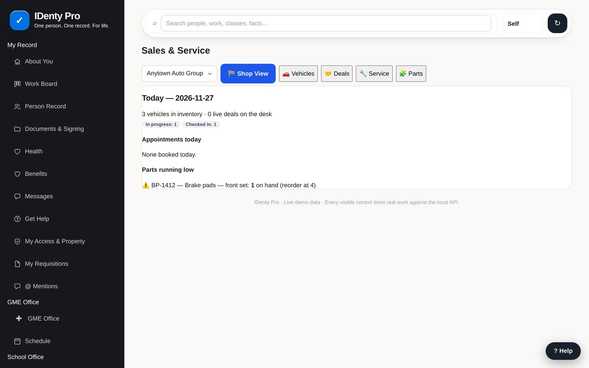
Construction jobs bill themselves
For a builder, the record grows a ledger. Crew time is coded to the job, the phase, and the kind of cost as it is clocked; when payroll finalizes, the wages and their burden — taxes, workers’ comp, fringe — land on the job by themselves, at the rates in force that week. Progress billing stops being a spreadsheet somebody keeps: the schedule of values, the pay applications with the standard G702/G703 math done by the server, retainage held and released in both directions, change orders that cannot be billed until they are approved. Certified payroll — the WH-347 — comes out of the same hours, because it was never a separate pile of paper either.
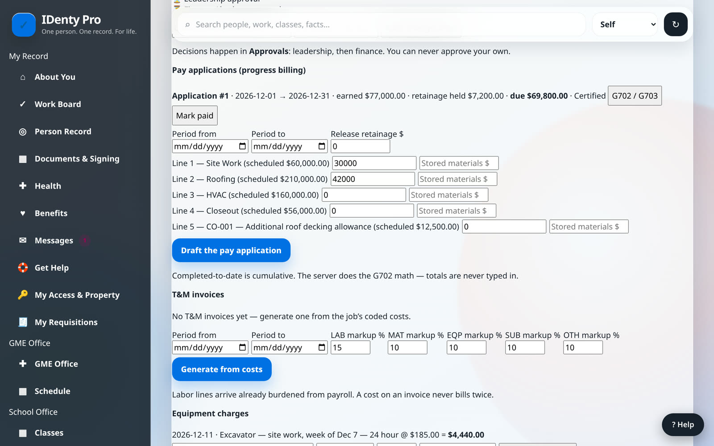
Customers are people, not a second database
A home-services company’s customers are people too, so they live on the record — in this demo, the very same record as the driver above: an employee at one institution, a customer at another, one file. An estimate is priced from the shop’s own pricebook and approved with a signature that lands on the customer’s record. The work order carries the lines actually used; the invoice is generated from those lines, never re-typed; payments are recorded against it; and what is owed ages on a board the system chases like everything else. The gate code the tech needs is on the customer’s site notes — marked staff-only, and kept out of the customer’s own view.
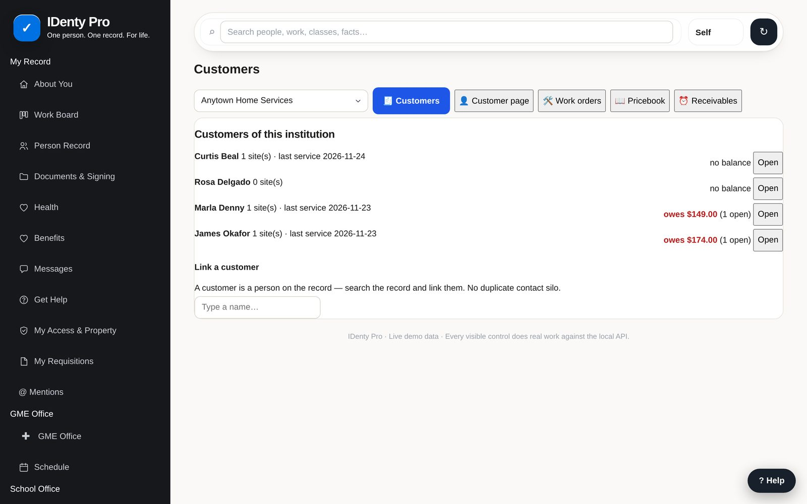
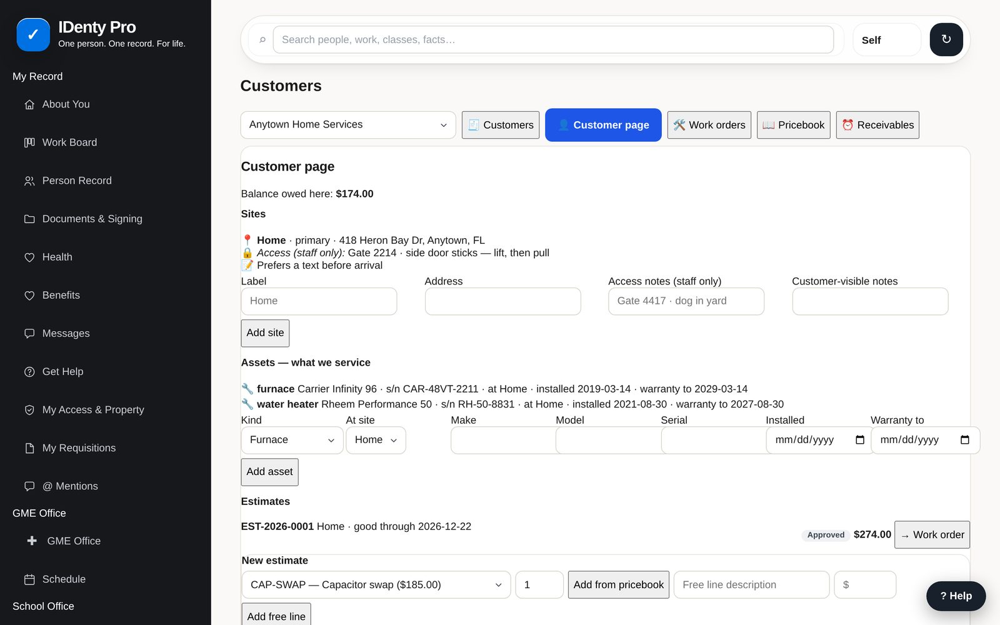
The intranet is the same building
And the SharePoint job — the home page, the news, the cafeteria menu — is a publishing layer on the same record, not a farm of sites. Pages are built from templates and a small, opinionated set of blocks, so a non-designer can’t produce an ugly one. News is written once, aimed in plain words — everyone at the terminal, drivers, teachers — scheduled when it should be, and expired by default instead of living forever. Menus are structured data — the week, the day, the meal — never a photograph of a PDF. A page that points at a policy points at the current sealed version from the record, and the audience for everything is resolved from the same affiliations that decide everything else: if you can find it in search, you can open it, and if you can’t open it, it never appears. One home per institution. Sprawl is refused by design.
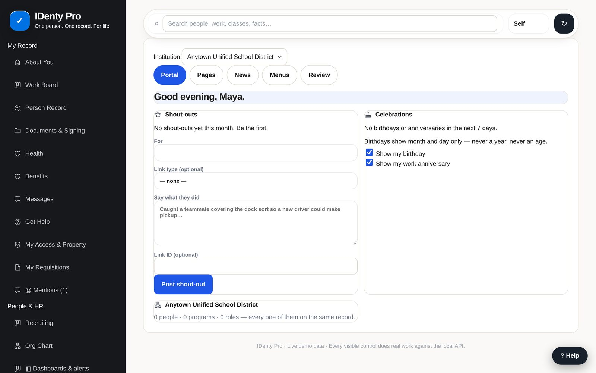
It costs what a server costs
IDenty Pro is free and open-source. It runs on one ordinary machine, on the institution’s own hardware, and the data never leaves the building unless the institution sends it. There is no per-seat rent, no module menu, and no exit project — the record was always yours. The honest limits, stated as plainly as the rest: it is in active development, it is not a finished product, and nobody should run a real payroll on it yet. What it already is, is proof that the shape works: one record, one system, no toll roads.
One tool, on purpose
People will say “jack of all trades, master of none.” But most of these trades are commodities now: word processing runs on open file formats, an electronic signature’s legal force comes from statute (ESIGN/UETA) rather than a vendor’s brand, and a database grid is a database grid. Selling each commodity back as a separate module — own login, own copy of your people, plus an integration bill to connect it to the record — isn’t craftsmanship; it’s toll collection. The masters’ real failure is the seam: five products holding five copies of the same person. IDenty Pro’s claim is mastery of the seam, because there isn’t one — one record, and every trade reads the same truth. Specialization still wins a few deep wells (multi-country payroll tax, giant learning catalogs, pooled benchmarking), and our comparison chart marks those rows Missing for IDenty, in the open.
Don’t take our word for any of this. We compared IDenty Pro against the 432 functions of 59 platforms — the HR giants (SAP SuccessFactors, Oracle, UKG, Dayforce, ADP, Rippling, HiBob, Paycom, Paylocity, BambooHR), the residency tools (New Innovations, Medtrics, MedHub, Thalamus, One45), the college systems (Ellucian, Slate, Workday Student, Blackbaud), the trade-school systems, the K-12 student systems (PowerSchool, Infinite Campus, Skyward, and friends), and the classroom systems (Canvas, Schoology, Google Classroom, Moodle) that schools rent on top of all of them — and published the losses alongside the wins.
Capacity, in plain numbers
IDenty Pro runs on one server you own — no rented cloud, no per-seat meter. So here are the numbers, measured on a workstation-class server (14-core Xeon, 32 GB of memory) doing real work — chase boards, record lookups, full-text search: about 60 requests a second, sustained, and zero errors with 250 people connected at the same time.
In human terms: people click, then read, then think. A few hundred people actively working at the same moment — the busiest onboarding morning a 10,000-person institution can throw at it — sits comfortably on that one box. Logged in is not the same as active, and idle people cost almost nothing.
And the honest limit: if you outgrow one server, the answer today is a bigger server. Running several app servers in front of one database — the trick the giant platforms use — is on the roadmap, not in the product, and we won’t claim it until it’s built and measured. When the numbers on this page change, it’s because we measured again.
Meet the demo cast
Every screenshot on this page is a real record in the working build, and every record belongs to a person. These are the demo people — invented, generated on a home graphics card — and they no longer just pose for this page: their portraits live on their own records inside the product, so the faces on the start screen and the person records above are the same people listed here. They are employed across the school district, the hospital, the freight company, and the auto group in the demonstration data. A record system should look like the workforce it serves: not just the corner office, but the custodian, the bus driver, and the night warehouse crew too.


A newsletter tool, self-hosted
The second member of this shelf is not Vizsla’s own software, and the page says so plainly: it is Mailcheap, an open-source newsletter tool (AGPL-licensed, by Marc Lou) that Vizsla plans to seat here for organizations that publish. You write an issue, send it to your list, and the issue also publishes as a web page — the beehiiv-and-Substack job, without handing your list to either of them.
It runs on your own server and sends through Amazon SES, so the list, the sending, and the archive stay the organization’s own. Its honest state: a planned member of this shelf, not a shipped Vizsla app — adopted, not built here, and sending stays switched off until the mail plumbing behind it is properly configured.
What this shelf runs on
Even the project’s own mailbox pays rent. Vizsla’s business mail runs on Microsoft 365 Business Standard with Copilot — $28.20 a month — and it is a subscription for a plain reason: a home user isn’t allowed to run a mail server of their own. Internet and email providers block the sending and receiving, and most of what a home server did send would never land. To be sure the mail arrives, you pay the tax — and Microsoft got the job simply for the Copilot bundle.
The tools this shelf would grow into carry tolls of the same kind. E-signature an app can call: DocuSign’s developer tier from $50 a month billed annually, Dropbox Sign’s API from $75 a month. Accounting sync: Xero’s partner fee, about $24 a month. Hiring screening is the honest exception — background checks run by law under each employer’s own credentialed account, so the fundable piece there is only the connector, and it carries no price. The full breakdown — every fee this project has priced, in the open — is on the Donate page.
The honest state of this shelf
Young, and not pretending otherwise. IDenty Pro is being built — the screenshots above are the current build, honestly labelled, not a mockup of a someday product; the newsletter tool is a planned adoption. When either is ready for outside hands, this page will say so in as many words, with the download or the deployment beside it. Until then, organizations curious about either are welcome to write: admin@vizslaos.com.